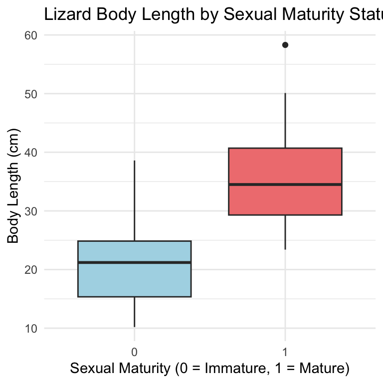
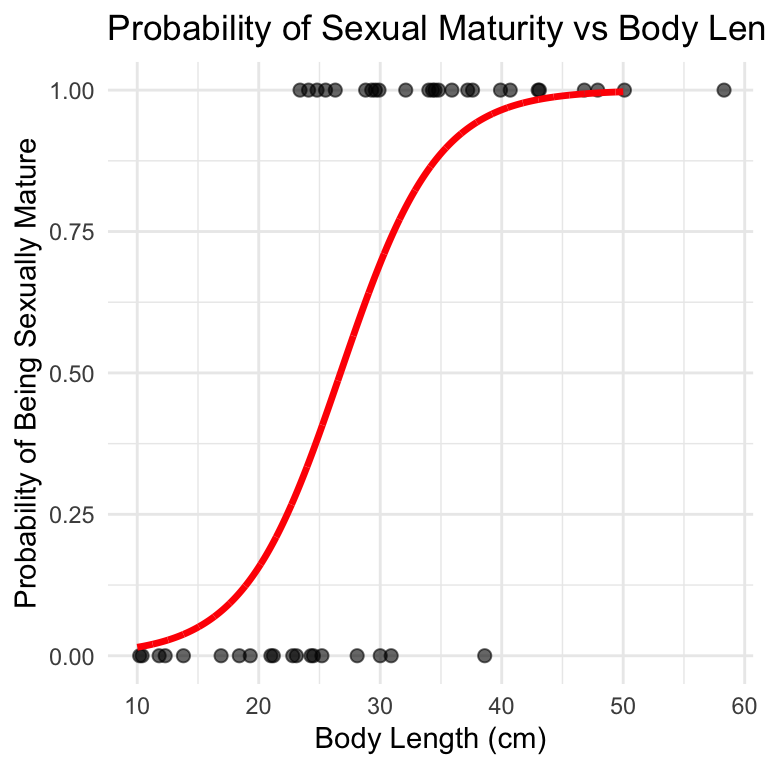
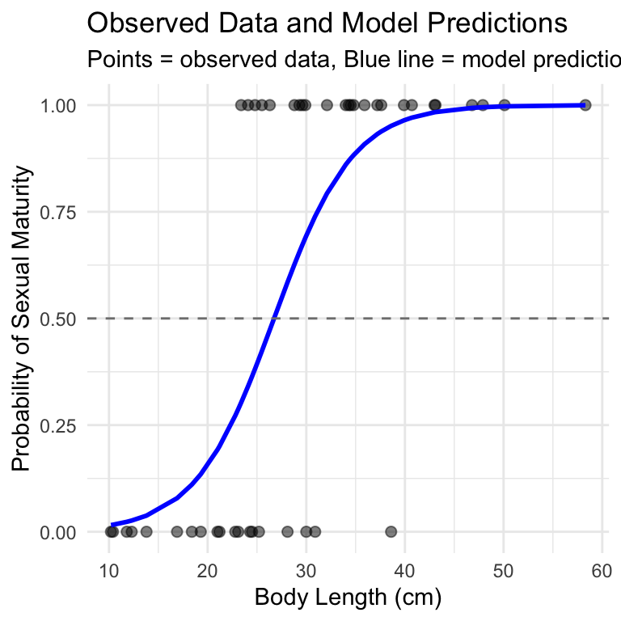

Course review
Logistic regression is used when: - The response variable is binary (yes/no, 1/0, present/absent) - Data follows a binomial distribution (not normal) - We want to model the probability of an outcome
We’ll explore the relationship between body length and sexual maturity in female lizards - Response variable: Sexual maturity (mature: 1 = yes, 0 = no) - Predictor variable: Body length in cm - Question: Can we predict the probability of sexual maturity from body size?
Let’s visualize how body length differs between sexually mature and immature lizards:
# Create boxplot showing length by maturity status
maturity_boxplot <- ggplot(lizards_df, aes(x = factor(mature), y = length)) +
geom_boxplot(fill = c("lightblue", "lightcoral")) +
labs(title = "Lizard Body Length by Sexual Maturity Status",
x = "Sexual Maturity (0 = Immature, 1 = Mature)",
y = "Body Length (cm)") +
theme_minimal()
maturity_boxplot
The glm() function is similar to lm() but requires specifying the distribution family:
# Fit logistic regression model
# family = binomial tells R we have binary data
logistic_model <- glm(mature ~ length,
data = lizards_df,
family = binomial)
# Get model summary
summary(logistic_model)
##
## Call:
## glm(formula = mature ~ length, family = binomial, data = lizards_df)
##
## Coefficients:
## Estimate Std. Error z value Pr(>|z|)
## (Intercept) -6.6899 2.1401 -3.126 0.00177 **
## length 0.2503 0.0775 3.229 0.00124 **
## ---
## Signif. codes: 0 '***' 0.001 '**' 0.01 '*' 0.05 '.' 0.1 ' ' 1
##
## (Dispersion parameter for binomial family taken to be 1)
##
## Null deviance: 60.176 on 43 degrees of freedom
## Residual deviance: 34.041 on 42 degrees of freedom
## AIC: 38.041
##
## Number of Fisher Scoring iterations: 6The positive slope (0.2503) indicates: - Longer lizards are more likely to be sexually mature - For each 1 cm increase in length, the log-odds of maturity increase by 0.2503
Log-odds are hard to interpret. Let’s convert to odds:
# Extract the slope coefficient
slope_coefficient <- coef(logistic_model)[2]
# Convert log-odds to odds ratio
odds_ratio <- exp(slope_coefficient)
odds_ratio
## length
## 1.284388
# Interpretation
# For every 1 cm increase in length, the odds of being sexually mature
# increase by a factor of 1.284 (or about 28.4%)# Create sequence of x-values for prediction
xvals <- seq(from = 10, to = 50, by = 0.01)
# Get predicted probabilities
yvals <- predict(logistic_model,
list(length = xvals),
type = "response")
# Create prediction dataframe for plotting
prediction_df <- data.frame(length = xvals,
probability = yvals)# Create the logistic regression plot
logistic_plot <- ggplot() +
# Add data points
geom_point(data = lizards_df,
aes(x = length, y = mature),
alpha = 0.6, size = 2) +
# Add logistic curve
geom_line(data = prediction_df,
aes(x = length, y = probability),
color = "red", size = 1.2) +
labs(title = "Probability of Sexual Maturity vs Body Length",
x = "Body Length (cm)",
y = "Probability of Being Sexually Mature") +
theme_minimal()
logistic_plot
Let’s predict the probability of sexual maturity for specific lizard sizes:
# Predict for a 20 cm lizard
prob_20cm <- predict(logistic_model,
list(length = 20),
type = "response")
prob_20cm
## 1
## 0.1565304
# Predict for a 30 cm lizard
prob_30cm <- predict(logistic_model,
list(length = 30),
type = "response")
prob_30cm
## 1
## 0.6939292
# Predict for a 40 cm lizard
prob_40cm <- predict(logistic_model,
list(length = 40),
type = "response")
prob_40cm
## 1
## 0.9651551Unlike linear regression, logistic regression doesn’t have a traditional R². We use pseudo-R² instead:
The last three values are the pseudo-R² statistics:
Values around 0.4-0.5 indicate moderate to good fit. Our model explains approximately 40-50% of the variation in sexual maturity status.
# Create a plot showing observed vs predicted probabilities
lizards_df$predicted_prob <- predict(logistic_model, type = "response")
diagnostic_plot <- ggplot(lizards_df, aes(x = length)) +
# Add observed data as points
geom_point(aes(y = mature), alpha = 0.5, size = 2) +
# Add predicted probabilities
geom_line(aes(y = predicted_prob), color = "blue", size = 1) +
# Add 50% probability threshold
geom_hline(yintercept = 0.5, linetype = "dashed", color = "gray50") +
labs(title = "Observed Data and Model Predictions",
x = "Body Length (cm)",
y = "Probability of Sexual Maturity",
subtitle = "Points = observed data, Blue line = model predictions") +
theme_minimal()
diagnostic_plot
family = binomial